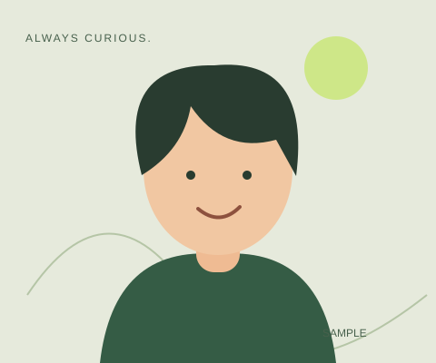

HTML
내용에 의미를 더하는 뼈대
시맨틱 태그 접근성HELLO, WORLD. I'M HANEUL.
안녕하세요, 프론트엔드를 배우는 김하늘입니다.
일상에서 발견한 질문을, 직접 쓰고 싶은 화면으로 바꿉니다.
학습용 가상 인물 · 첫 번째 포트폴리오
01 / ABOUT ME

평범한 메모장을 만들다가 “이 버튼을 누르면 어떤 일이 일어날까?”라는 질문으로 웹 공부를 시작했습니다.
지금은 HTML로 내용을 정리하고, CSS로 보기 좋게 배치하고, JavaScript로 반응하는 화면을 만들고 있습니다.
02 / MY TOOLBOX
아는 만큼 만들고, 만들면서 배웁니다.
내용에 의미를 더하는 뼈대
시맨틱 태그 접근성어떤 화면에서도 편안한 배치
Flex & Grid 반응형사용자의 행동에 반응하는 연결
DOM & 이벤트 API03 / SELECTED PROJECTS
작은 시도들을 하나씩 쌓아갑니다.
아래 카드는 가상 프로젝트입니다. 실제 연결을 선택하면 octocat의 공개 저장소를 불러옵니다.
아래 버튼은 가상 상태를 보여줍니다. 실제 API 결과와 구분해서 관찰하세요.
04 / SAY HELLO
함께 공부하고 싶은 이야기,
새로운 아이디어를 남겨주세요.
학습용 폼입니다.
입력 내용은 서버나 이메일로 전송되지 않습니다.